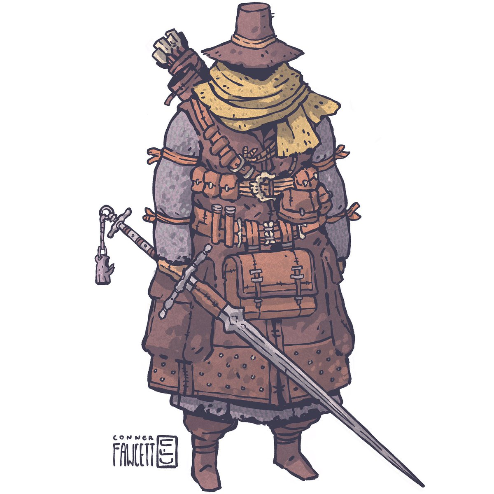

MINIQUEST 1:
you find/are sold a pair of antlers that stick to your head. the antlers allow you to talk to animals 1/day.
one day in a forest youll be pulled to a spot, you find a stag skeleton, the antlers fly off and you gain a skeletal deer companion.
if you kill the deer to get the antlers back theyll instead turn animals against you.
MINIQUEST 2:
villager found an artifact in the swamp..but it made him insane and he locked himself in his house..
or its..powerarmor and it ran off as soon as he put it on.
MINIQUEST 3:
villager found something..but feels like something followed him from the swamp..
its a friendly memory locked in the machine?...or a creature that laid eggs in the thing..
MINIQUEST 4:
Space dwarves land on earth. dwarves with cool sunglasses. they need to repair their ship.
theyre pretty cool. arrogant, but harmless.
MINIQUEST 5:
mistmen like in kenshi, their goal is to kidnap people..
the party runs into them or theyre asked to retrieve someone
maybe they show up and stealsomeone while hes down from a different fight.
MINIQUEST 6:
maybe larger quest or setting. desert settlement is dependant on decanter of endless water. obv it gets stolen.
alternatively a people in the run, settle in an area with poisonous water that mutates you but use decanter
of endless water to sustain themselves.
MINIQUEST 7:
A great wizard researcher has a number of different quests i the form
of lost/ ancient tomes hes looking for. ie. a tome in a different dimension
or one that was reported stolen or last owned by some great hero
they should all have some kind of great value..either historical
proving lineage or something or have knowledge of a god or a ritual..
or a hidden place! a wizard getting together some chumps for a quest is
also a likely meeting story.
you each arrive with an invitation!
MINIQUEST 8:
There's a soceity of mages and researchers that pay good money for
strange creatures. a lot for unknown ones. but it wont be easy to take them back
there are many tales of adventurers that met their end trying to transport a creature
back to the city.
MINIQUEST 9:
One of the PCs younger brothers wants to join the adventurers!
if they deny him he will secretly follow them..and have to roll not to
run into anyone right behind the party..
MINIQUEST 10:
A quest in a castle with crawling through a system of fireplaces
MINIQUEST 11:
Run into a character thats in trouble in the dungeon, due to the encumbrance system
normally people store gold in banks or anywhere safe, this guy doesn't trust banks but now hes
so heavy he became stuck...will layers resist the temptation of robbing him??
